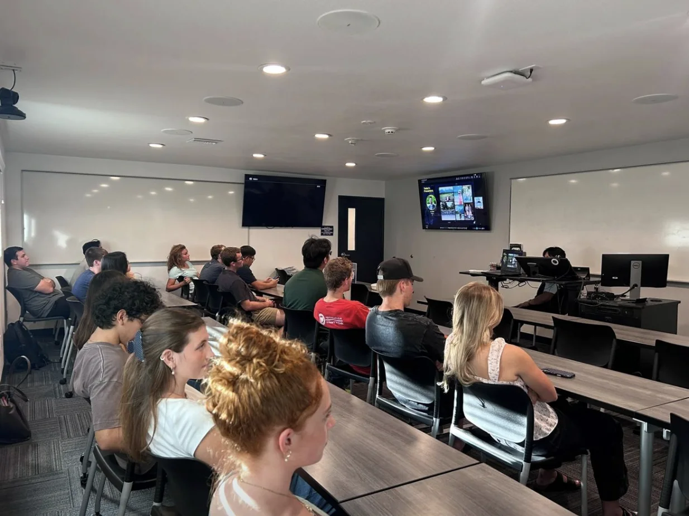

TMU Business Network
I co-founded my university’s official networking society with two classmates and Career Services’ backing. As Director of Marketing, I led outreach and our channels. In three months, it grew from zero to 650+ members.
Results · Three months later
- 650+members in 3 months
- 54%of all students
- 10+matches with Deloitte, EY and KPMG
SituationWhere it started
- 1,200 students at The Master’s University.
- Zero opportunities for students to network with working professionals.
ObstacleWhat stood in the way
- No existing business network or club on campus.
- As students, we had limited connections to working professionals.
ActionWhat we did
- Cold-reached professionals at Big Four firms and other organizations.
- Offered students coffee chats, Zoom calls and 1:1 matching.
- Closed the gap between education and real-world experience.
ResultWhat it meant
Countless testimonies from students that it changed how they saw their careers.